セットアップ#
以下から最新のPosgreSQLのインストーラをダウンロードしてください。
https://www.enterprisedb.com/downloads/postgres-postgresql-downloads
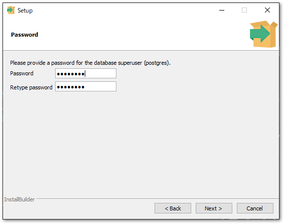
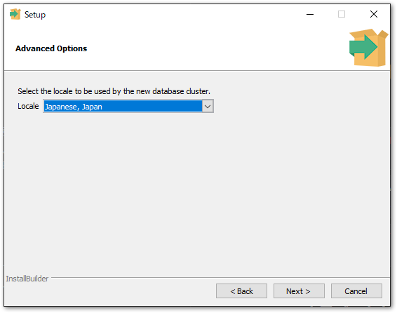
続いてスタックビルダにて付加機能をインストールします。時系列データベースには、定期的なデータの圧縮、または、削除が必要となりますので、そのためのタスクスケジューリングエージェントであるpgAgentをインストールします。
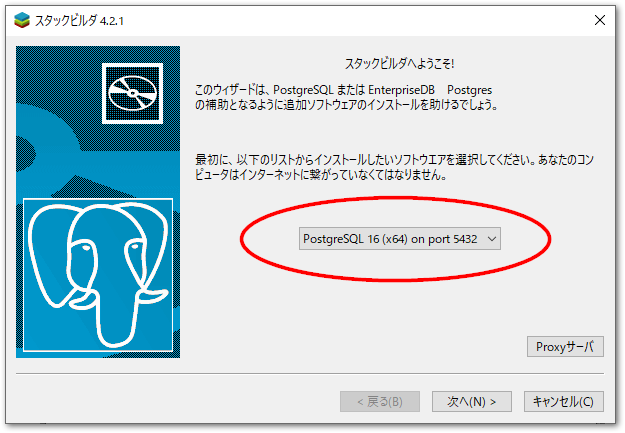
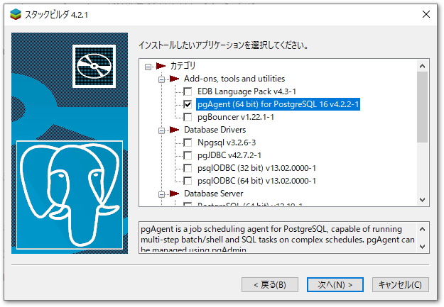
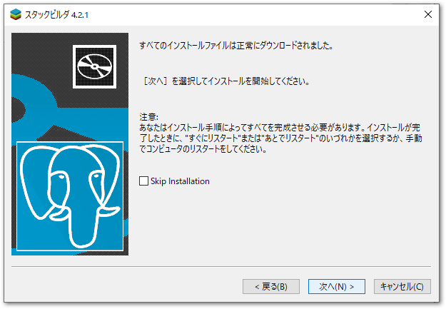
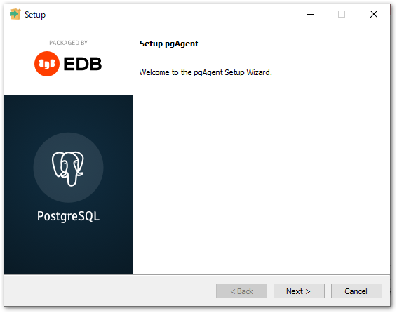
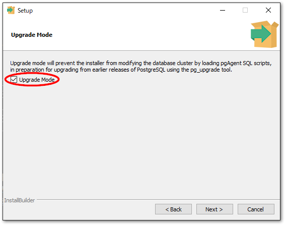
PostgreSQLインストール時に設定したデータベースの管理者（postgres）のパスワードを入力します。
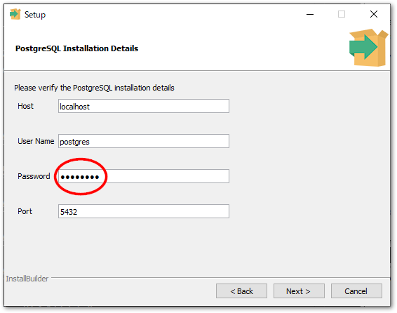
つづいて管理者のWindowsログインユーザ名とパスワードを入力します。
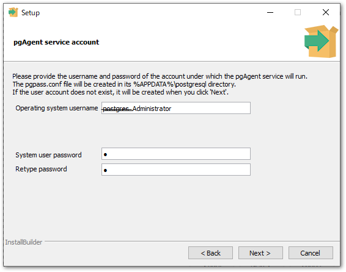
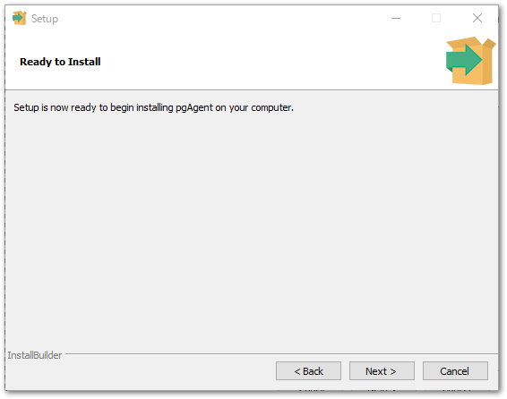
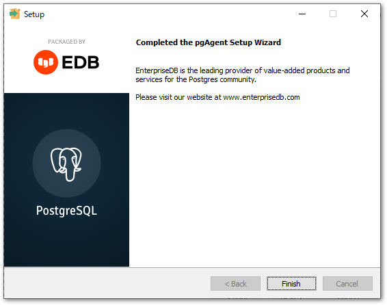
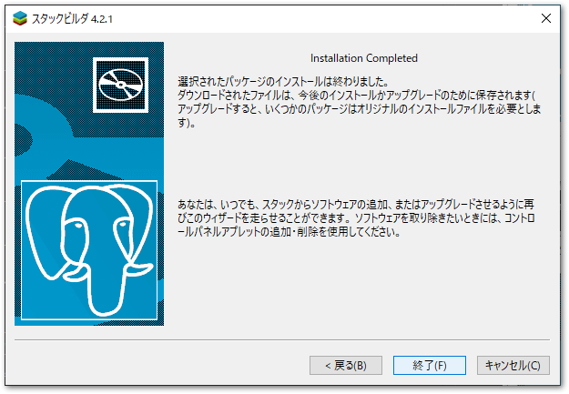
インストールした実行ファイルが置かれたパスに環境変数PATHを設定します。
C:\Program Files\PostgreSQL\<<PostgreSQLのバージョン番号>>\bin
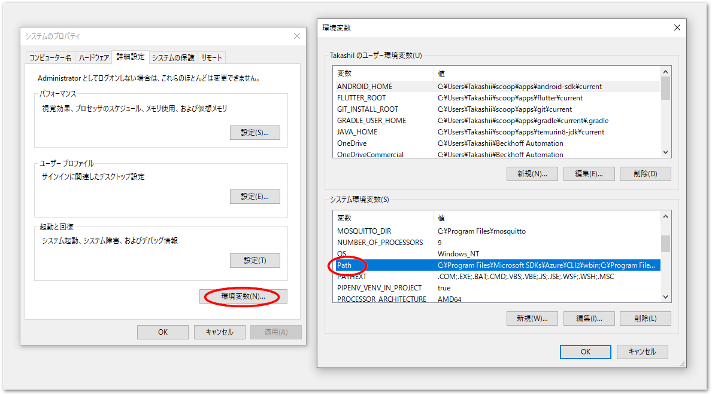
次に、TimescaleDBのインストールを行います。次のサイトから、インストールしたPostgreSQLに対応したバージョンのTimescaleDBのzipアーカイブをダウンロードします。
https://docs.timescale.com/self-hosted/latest/install/installation-windows/#windows-releases
timescaledb-postgresql-16-windows-amd64.zipを解凍し、管理者としてsetup.exeを実行します。ターミナルにて下記の通り順に対話的に入力します。
yを入力Do you want to run timescaledb-tune.exe now? [(y)es / (n)o]: y
postgresql.confが配置されたPostgreSQLのデータフォルダを指定します。Please enter the path to your postgresql.conf: C:\Program Files\PostgreSQL\16\data
Tip
postgresql.confのパスは以下のコマンドをPowershell等で実行することで知ることができます。PS > psql -c "SHOW config_file;" -U postgres PS > Password for user postgres: <インストール時に設定したパスワード> config_file ----------------------------------------------------- C:/Program Files/PostgreSQL/16/data/postgresql.conf (1 row)
確認メッセージが現れますので、
yを入力します。== Writing backup to: C:\Users\Takashii\AppData\Local\Temp/timescaledb_tune.backup202405181055 == shared_preload_libraries needs to be updated == Current: #shared_preload_libraries = '' == Recommended: shared_preload_libraries = 'timescaledb' -- Is this okay? [(y)es/(n)o]: y SUCCESS: shared_preload_libraries will be updated
メモリやCPUコアにより最適化を行います。
yを押してください。-- Tune memory/parallelism/WAL and other settings? [(y)es/(n)o]: y
システム解析が行われ、その結果のチューニングされた推奨値が表示されます。
== Recommendations based on 31.69 GB of available memory and 9 CPUs for PostgreSQL 16 == Memory settings recommendations == Current: shared_buffers = 128MB #effective_cache_size = 4GB #maintenance_work_mem = 64MB #work_mem = 4MB == Recommended: shared_buffers = 512MB effective_cache_size = 24339MB maintenance_work_mem = 2047MB work_mem = 10902kB -- Is this okay? [(y)es/(s)kip/(q)uit]: y SUCCESS: memory settings will be updated
続いてCPUコア数に応じた最大ワーカプロセス数の推奨値が現れます。
== Parallelism settings recommendations == Current: MISSING: timescaledb.max_background_workers #max_worker_processes = 8 #max_parallel_workers_per_gather = 2 #max_parallel_workers = 8 == Recommended: timescaledb.max_background_workers = 16 max_worker_processes = 28 max_parallel_workers_per_gather = 5 max_parallel_workers = 9 -- Is this okay? [(y)es/(s)kip/(q)uit]: y SUCCESS: shared_preload_libraries will be updated
WAL(Write Ahead Logging) に必要なバッファメモリに関する設定を行います。
== WAL settings recommendations == Current: #wal_buffers = -1 min_wal_size = 80MB == Recommended: wal_buffers = 16MB min_wal_size = 512MB -- Is this okay? [(y)es/(s)kip/(q)uit]: y SUCCESS: background writer settings are already tuned
その他の設定のお勧めが表示されます。
yを押してください。全ての設定が完了し、ライブラリ等がインストールされます。最後にEnterを押すとターミナルウィンドウを閉じます。== Miscellaneous settings recommendations == Current: #default_statistics_target = 100 #random_page_cost = 4.0 #checkpoint_completion_target = 0.9 #max_locks_per_transaction = 64 #autovacuum_max_workers = 3 #autovacuum_naptime = 1min == Recommended: default_statistics_target = 100 random_page_cost = 1.1 checkpoint_completion_target = 0.9 max_locks_per_transaction = 512 autovacuum_max_workers = 10 autovacuum_naptime = 10 -- Is this okay? [(y)es/(s)kip/(q)uit]: y SUCCESS: miscellaneous settings will be updated == Saving changes to: C:\Program Files\PostgreSQL\16\data\postgresql.conf 2024/05/18 11:06:00 Installing TimescaleDB library files... 2024/05/18 11:06:00 Success! 2024/05/18 11:06:00 Installing TimescaleDB control file... 2024/05/18 11:06:00 Success! 2024/05/18 11:06:00 Installing TimescaleDB SQL files... 2024/05/18 11:06:00 Success! TimescaleDB installation completed successfully. Press ENTER/Return key to close...
以上でインストールが完了しました。postgresql.confファイルをテキストエディタで開いて、以下の行があるか確認してください。
shared_preload_libraries = 'timescaledb' # (change requires restart)
また次のコマンドでDLLのパスを調べ、timescale*.dllが存在するか確認します。
PS > pg_config --pkglibdir --libdir
C:/PROGRA~1/POSTGR~1/16/lib
C:/PROGRA~1/POSTGR~1/16/lib
PS > ls C:/PROGRA~1/POSTGR~1/16/lib/timescale*.dll
ディレクトリ: C:\Program Files\PostgreSQL\16\lib
Mode LastWriteTime Length Name
---- ------------- ------ ----
-a---- 2024/05/18 11:06 583680 timescaledb-2.15.0.dll
-a---- 2024/05/18 11:06 539648 timescaledb-tsl-2.15.0.dll
-a---- 2024/05/18 11:06 36352 timescaledb.dll
PS >
問題無ければ再起動してください。